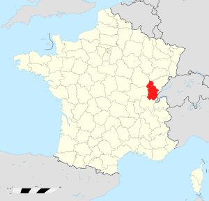
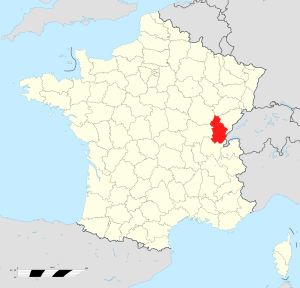

This creature is well known in France and francophone regions of Switzerland and Italy, including the Aosta Valley. The dahu, a quadrupedal mammal, may have been inspired by the chamois, a small, horned goat-antelope once plentiful in European mountainous regions, and also resembles the ibex.
Edelweiss flowers, swiss pine tree branches
?? Replace this with a few lines on the animal's behaviour.
Asensio: The Dahu is a legendary creature that sparks a lot of controversy and debate. We only have ancient fairy tales maintained by generations of hunters and storytellers who told wonderful and exciting hunting stories. Some said that the Dahu was very intelligent and could even speak. Although the Dahu myth is very old and widespread, there is no real proof that this creature exists.
Thierry: It's just too cute ! >>>>>>> Dahu: Added why I like about it